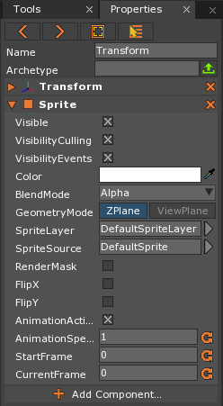
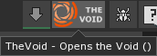
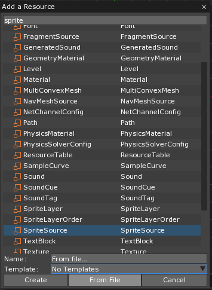
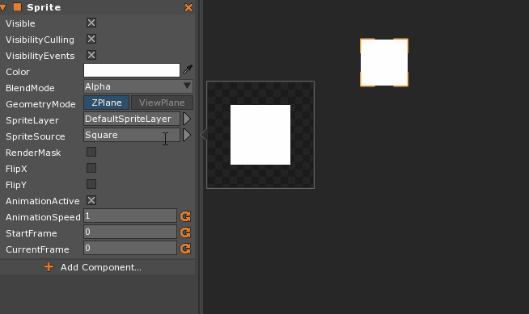
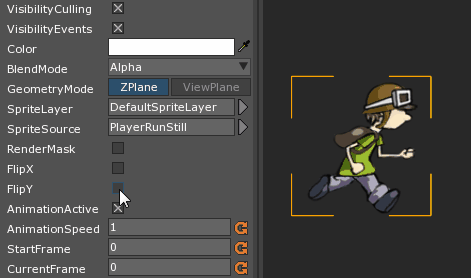

Sprite
The Sprite Component is used to add and control the visual elements of two-dimensional artwork. A Sprite can be used for many things from a simple poster on a three-dimensional wall to all the visual elements of a 2D game. The Sprite Component has no dependencies and can be added to any Game Object.
Common Uses
- Characters and other artwork in a two dimensional project
- Placing 2D pictures into a 3D landscape
- 2D animations
Using Sprites
Creating Sprites
Sprites can be made in one of two ways. Typically they will be made by using Command : CreateSprite; however, the Sprite Component can also be added to any Game Object. There is a minor difference between the two: whereas creating a Sprite will default to having a Square SpriteSource, adding the Sprite Component to an existing Game Object will default to having the DefaultSprite SpriteSource. Otherwise, all other parameters will be the same, as seen here:

After adding the Sprite, the next step is to import an image and create the SpriteSource resource that will be used.
Adding a SpriteSource
Note
Zero Engine only allows the importing of .PNG type images.
The Zero Engine has numerous resources available on The Void, giving the user access to several Sprites and other animations. You can access The Void by clicking on the Void icon in the top right corner of the Engine.

It is possible to add SpriteSources of your own as well. By simply grabbing the file on your computer and dragging it into the Editor window, Zero Engine will import the chosen asset. Alternatively, one can invoke the Command : Add or click the Add button, select SpriteSource from the list, followed by clicking on “From File”:

A window will open where the user may select the image or images to import, keeping the saved Resolution and Size. Once imported, these files can then be used to create single frame images or multi-frame animations.
Changing SpriteSources
After importing one’s images, the next step is to change the SpriteSource Property on the Sprite Component to the resource created by the imported image. This is done by clicking on the current SpriteSource and finding the imported image in the drop-down menu that opens.

If the Sprite is facing the wrong direction, or you wish to have a section in your project with reversed gravity, it’s simply a matter of using the FlipX and FlipY variables.

Render Masks
Sprites can also be used as Render Masks with just a little set up. First, LevelSettings will need to have its ForwardRenderer Component removed and replaced with the DeferredRenderer Component. Inside the DefferedRenderer Component, RenderMasks will need to be set to True, which will turn the scene to black once the project is run. Any Sprite that now has the RenderMask property set to True will be multiplied with the black background, so when the Sprite is solid black nothing will show through, and when solid white everything will show through. Adjusting the alpha property will effect the opacity as expected.
Sprites As Animations
To use Sprites as animations rather than still images, please refer to SpriteSourceEditor.
Properties and Methods of Sprites
Sprite Events
EnterView:GraphicalEvent- The Graphical Event dispatched when the Sprite enters the view of the current
Camera
- The Graphical Event dispatched when the Sprite enters the view of the current
EnterViewAny:GraphicalEvent- The Graphical Event dispatched when the Sprite enters the view of any Camera in the scene
ExitView:GraphicalEvent- The Graphical Event dispatched when the Sprite exits the view of the current Camera
ExitViewAll:GraphicalEvent- Graphical Event dispatched when the Sprite exits the view of all Cameras in the scene
SpriteAnimationEnded:ObjectEvent- Event sent when the Animation stops playing